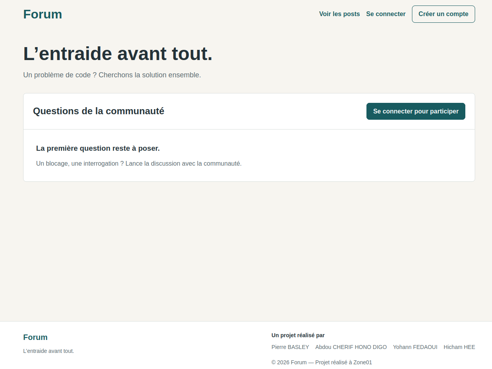
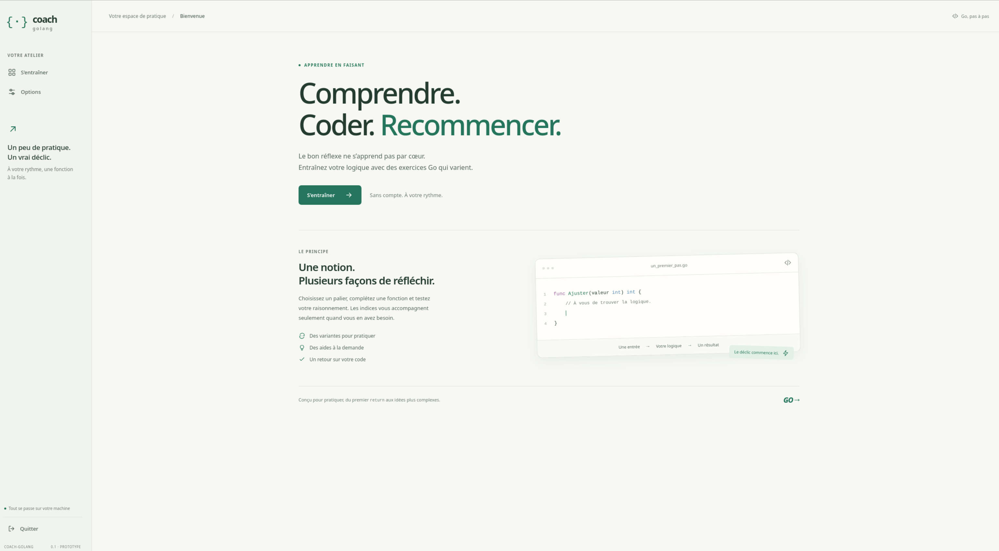

À LA RECHERCHE D’UNE ALTERNANCE
Développeur en formation.
Des projets pour avancer.
Je m’appelle Pierre Basley. En formation à Zone01 Rouen, je construis mon parcours en développement full stack, tout en me renforçant dans le domaine DevOps et IA.
Je recherche une alternance en développement full stack, DevOps ou ingénierie IA.
Voir mes projets Télécharger mon CV PDF · 89 ko · CV 2026
Disponibilité
Mai 2027
Rythme
Temps plein
Durée
2 ans d’alternance
01 / RÉALISATIONS
Apprendre en construisant.
Trois projets étudiants pour découvrir ma pratique du développement.

Projet étudiant · collectif01
Forum
Un espace d’échanges et d’entraide entre développeurs : publier un problème et préciser les stacks concernées.
- Go
- HTML
- CSS
- SQLite
- Git
- Docker

Projet étudiant · collectif02
Groupie Tracker
Explorer les artistes et leurs concerts : dates, lieux géolocalisés et recherche dynamique, via une API REST.
- Go
- HTML
- CSS
- Git
- Postman

Projet étudiant · collectif03
ASCII-ART
Transformer un texte avec trois templates et exporter le résultat en TXT, Markdown ou HTML.
- Go
- HTML
- CSS
- Git

PROJET PERSONNEL · PROTOTYPE
Coach Go
Un programme local pour s’entraîner à écrire des fonctions en Go. Le premier palier propose un exercice, un éditeur de code et une vérification par tests unitaires.
Prototype · Palier 1 · Linux Debian02 / PARCOURS
Parcours
Mes stacks
Le développement full stack est le socle de ma formation.
HTML
CSS
SQLite
JavaScript
Rust
PHP
C
C++
C#
SQL
MySQL
PostgreSQL
Mes outils de travail
- Git
- Docker
- Linux / Bash
- VS Code
- Postman
- Discord
Git pour travailler en groupe ; Docker sur certains projets.
Langues
- Anglais
- B2intermédiaire avancé
- Portugais
- A2initié
03 / CONTACT
Et si on échangeait ?
Vous proposez une alternance ? Parlons de vos besoins,
de mes projets et de la suite de mon parcours.